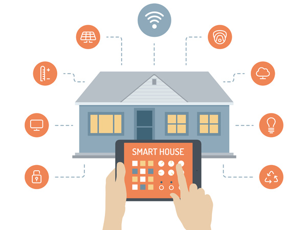

|  | 
| 
|
La domotica è la scienza interdisciplinare che si occupa dello studio delle tecnologie adatte a migliorare la qualità della vita nella casa e più in generale negli ambienti antropizzati. Questa area fortemente interdisciplinare richiede l'apporto di molte tecnologie e professionalità, tra le quali ingegneria edile, architettura, ingegneria energetica, ingegneria gestionale, automazione, elettrotecnica, elettronica, telecomunicazioni, informatica e design.